全52記事
ハンガリー留学の生活費｜大学公式データで6都市を比較
ハンガリー留学には毎月いくら必要？ブダペストやデブレツェンなど6都市の住居費と、大学が公表する生活費を日本円で分かりやすく紹介します。
記事を読む
「海外で働きたい」から「日本最高！」へ？ハンガリー留学で変わった僕の価値観とリアルな成長【デブレツェン大学CS専攻】
ハンガリー留学で変わった価値観と、変わらなかった生活習慣。デブレツェン大学のユウゴが、自己管理、日本への思い、自分の軸について本音で語ります。
記事を読む
Erasmus Mundus奨学金｜日本人の応募条件・倍率・2027年募集
共同修士の月額給付、選考実績、日本からの採用統計、SHとの併用と参加課程を公式資料で確認。
記事を読む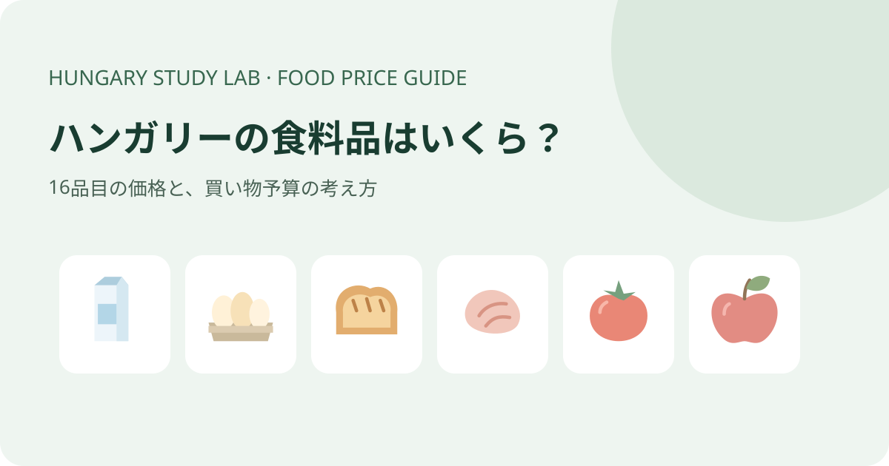
ハンガリーの食品・日用品はいくら？4店154品の価格表
Tesco・SPAR・Lidl・ALDIの食品と日用品154品を、商品写真・容量・フォリント価格・日本円の目安付きで確認できます。
記事を読む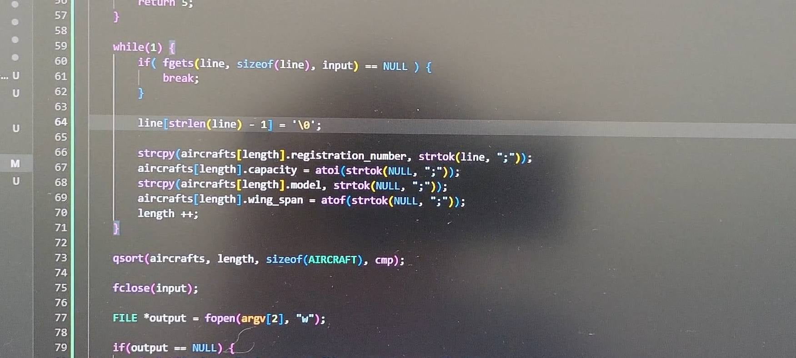
海外大CS学科は課題漬け？デブレツェン大学の日々の授業とプログラミング勉強法【CS専攻】
デブレツェン大学CS専攻の現役生が、日々の課題提出の実態、未経験からのプログラミング学習、友人やGoogle Geminiの活用法を紹介します。
記事を読むUniversity of Szeged（セゲド大学）
セゲド大学の英語学位課程、学費、出願、学生生活とQS・THEランキングを、公式資料の写真とともに紹介します。
記事を読むUniversity of Pécs（ペーチ大学）
ペーチ大学の英語学位課程、学費、出願、学生生活とQS・THEランキングを、公式資料の写真とともに紹介します。
記事を読むEötvös Loránd University（ELTE）
エトヴェシュ・ロラーンド大学（ELTE）の英語学位課程、学費、出願、学生生活とQS・THEランキングを、公式資料の写真とともに紹介します。
記事を読むUniversity of Debrecen（デブレツェン大学）
デブレツェン大学の英語課程、学費、出願、寮と学生生活、QS・THEランキングを大学公式資料の写真とともに紹介します。
記事を読むCorvinus University of Budapest（コルヴィヌス大学）
ブダペスト・コルヴィヌス大学の英語学位課程、学費、出願、学生生活とQS・THEランキングを、公式資料の写真とともに紹介します。
記事を読むBudapest University of Economics and Business（BUEB）
ブダペスト経済商科大学（BUEB）の英語学位課程、学費、出願、学生生活とQS・THEランキングを、公式資料の写真とともに紹介します。
記事を読むBudapest University of Technology and Economics（BME）
ブダペスト工科経済大学（BME）の英語学位課程、学費、出願、学生生活とQS・THEランキングを、公式資料の写真とともに紹介します。
記事を読むハンガリーでの家探し・アパート契約のリアル！後悔しない部屋選びのポイント【デブレツェン大学CS専攻】
デブレツェン大学CS専攻のユウゴが、渡航前のアパート契約、譲れない部屋の条件、家賃の送金、安さだけで選んだ失敗談を実体験から紹介します。
記事を読む海外大の夏休み・冬休みってどのくらい長いの？一時帰国や航空券事情まで解説【デブレツェン大学CS専攻】
デブレツェン大学CS専攻のユウゴが、夏休み・冬休みの長さ、試験日程との関係、日本への一時帰国や航空券の費用について実体験を紹介します。
記事を読む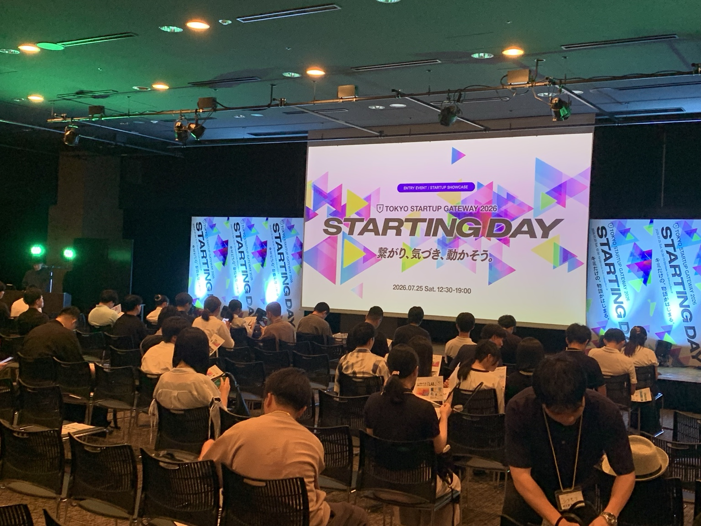
35歳、修士2年。ハンガリーに戻る前に、日本での時間を振り返る
35歳・修士2年のカネコが、一時帰国中のビジコン挑戦、イベントの裏方、英語学習と、ハンガリーに戻る前の正直な気持ちを振り返ります。
記事を読む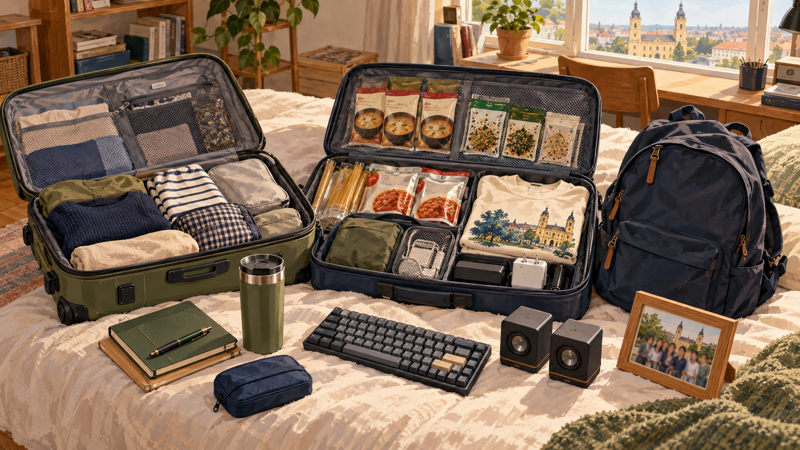
ハンガリー渡航時に「日本から持ってきて本気で良かったもの／いらなかったもの」リアルなパッキング事情【デブレツェン大学CS専攻】
デブレツェン大学CS専攻のユウゴが、日本から持参して良かった食品・タンブラー・ガジェット、現地調達できたもの、重量管理などパッキングのコツを紹介します。
記事を読むデブレツェンでの食生活リアル！自炊・スーパー事情から外食・食費まで徹底解説【デブレツェン大学CS専攻】
デブレツェン大学CS専攻のユウゴが、1ヶ月の食費、自炊メニュー、Coop・Sparの使い分け、日本食が恋しい時の工夫を紹介します。
記事を読む
ハンガリー留学での友達作りと人間関係｜国籍バランスからリアルな付き合い方まで
デブレツェン大学CS専攻の現役生が、多国籍な同級生、日本人コミュニティ、最初の友達ができたきっかけ、英語への不安と文化の違いを紹介します。
記事を読むハンガリー留学での友達作りと人間関係！国籍バランスからリアルな付き合い方まで解説【デブレツェン大学CS専攻】
デブレツェン大学CS専攻の現役生が、多国籍な同級生、日本人コミュニティ、最初の友達ができたきっかけ、英語への不安と文化の違いを紹介します。
記事を読む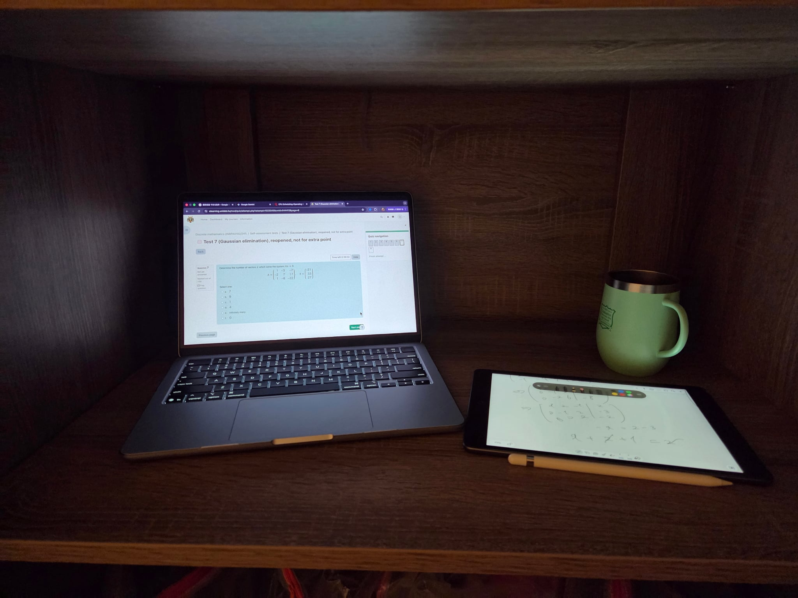
ハンガリーの大学のテスト期間（Exam Period）って実際どうなの？【デブレツェン大学CS専攻】
デブレツェン大学CS専攻の現役生が、ハンガリーの大学のテスト期間、Final Exam、口頭試問、再試験制度、試験勉強のリアルを紹介します。
記事を読む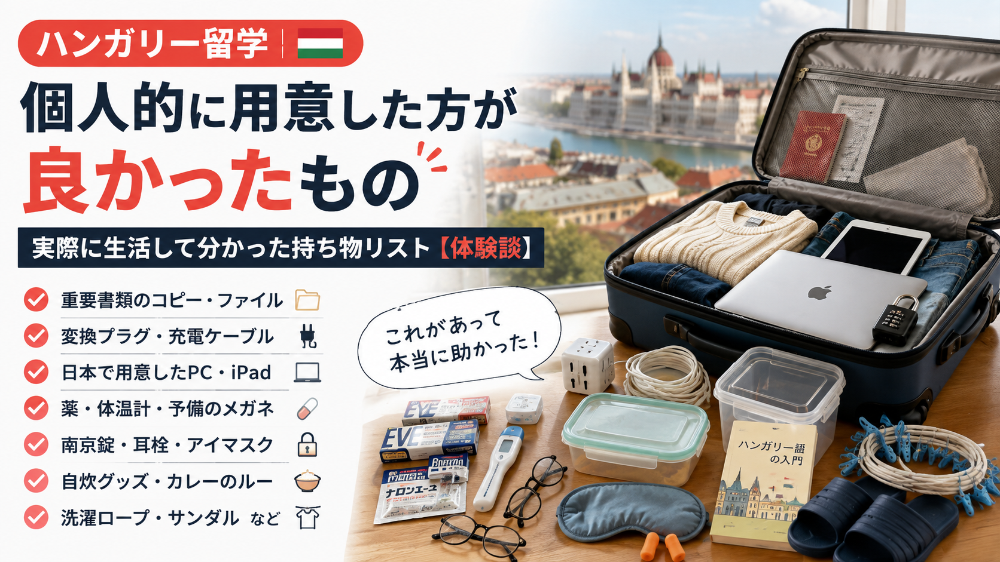
ハンガリー留学で個人的に用意した方が良かったもの
変換プラグ、PC、薬、南京錠、耳栓、自炊用品、重要書類など、実際のハンガリー留学生活で「日本から用意しておけばよかった」と感じた持ち物を体験談ベースでまとめます。
記事を読む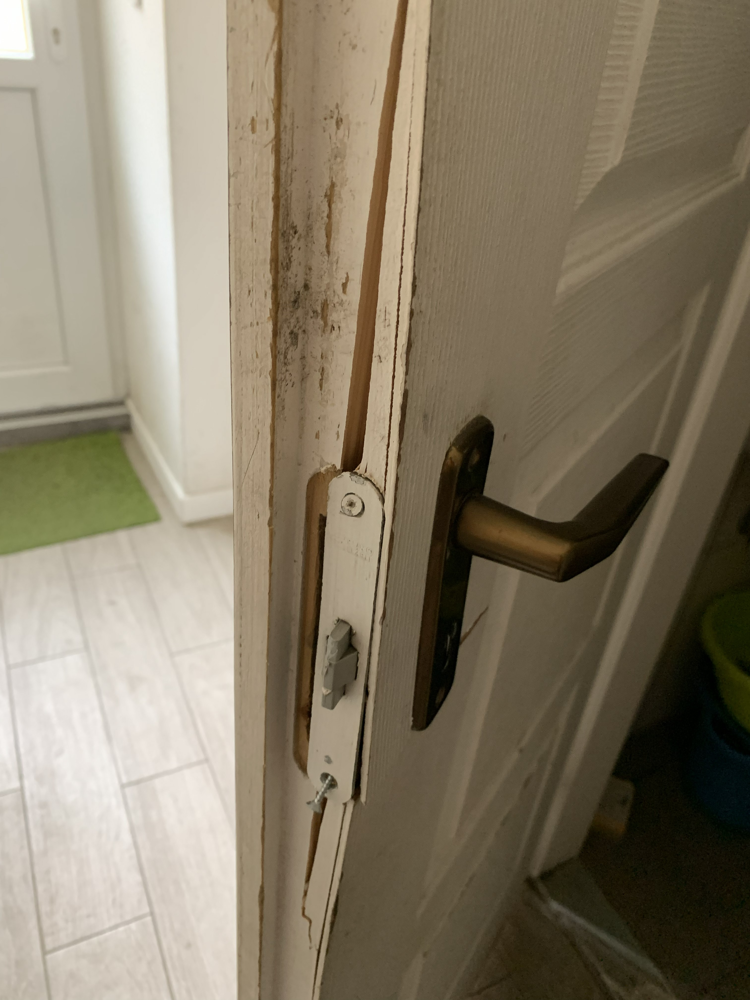
突然、鍵が変えられていた。ハンガリーで大家と大トラブルになった話
ハンガリー留学中、個人大家との賃貸トラブルで突然部屋の鍵を変えられ、デポジットや荷物も戻らなくなった実体験。消費者保護への相談や、個人契約で学んだ注意点を紹介します。
記事を読む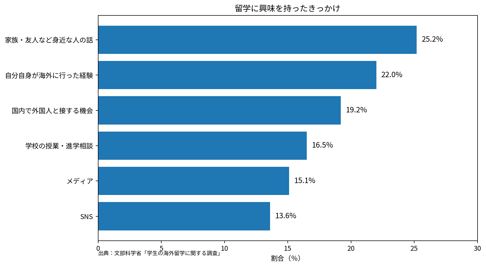
海外留学を考えるきっかけ1位は「身近な人の話」――海外進学にロールモデルが必要な理由
日本の若者の留学意欲、海外進学者数、費用や就職への不安をデータで整理し、海外進学を現実的な選択肢に変える「身近なロールモデル」との接点について考えます。
記事を読むなぜ私はハンガリーの大学院を選んだのか
イギリスやドイツも検討する中で、費用、スティペンディウム・ハンガリカム、BUEBの教育内容、ヨーロッパで学べる環境からハンガリーを選んだ理由を紹介します。
記事を読むなぜ34歳で仕事を辞め、ハンガリーの大学院へ進学したのか
製薬会社、軽井沢のホテル、英語塾での経験を経て、34歳で観光学を学ぶことにした経緯を紹介します。
記事を読む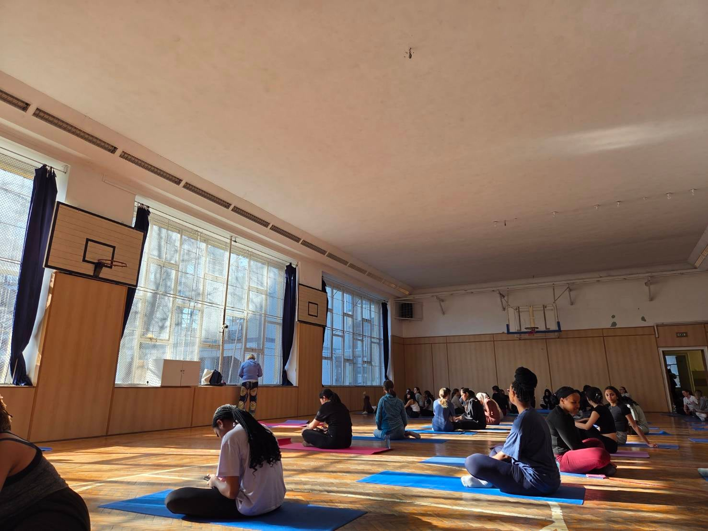
デブレツェン大生の日常（1年後期編）
Computer Science1年後期の時間割や授業内容、昼食、体育、週末の過ごし方まで、デブレツェン大学でのリアルな1週間を紹介します。
記事を読む現地でのお金事情！
ハンガリーでの現金・カード決済、Wise、海外送金、学費の支払い、ヨーロッパ旅行中の決済について紹介します。
記事を読むハンガリーの大学卒でも就職できるの？
ハンガリーの大学卒業後の就職活動、キャリアフォーラム、オンライン就活、デブレツェン大学CS卒業生の進路について紹介します。
記事を読む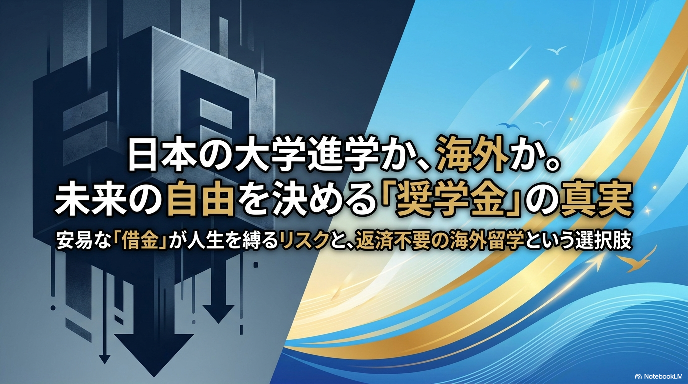
日本の大学進学か、海外か。奨学金と卒業後の自由を考える
日本の貸与型奨学金の返済、金利上昇、長期ローンが卒業後の仕事や人生に与える影響を整理し、返済不要のハンガリー政府奨学金という選択肢を紹介します。
記事を読む文系でもCS留学できる？
文系出身でもComputer Scienceへ進学できるのか。数学・物理・プログラミングの難易度を実体験をもとに紹介します。
記事を読む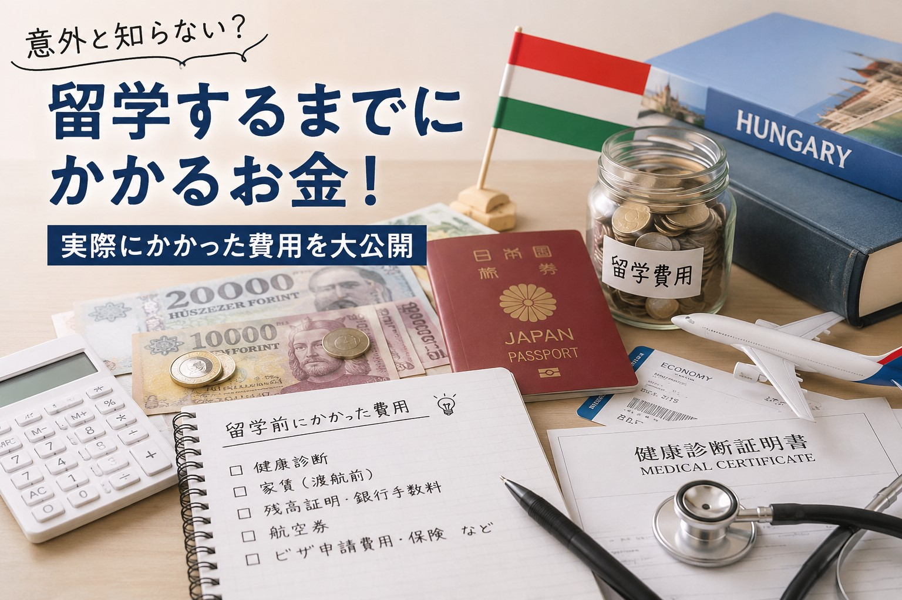
意外と知らない？留学するまでにかかるお金！
留学前に必要だった健康診断、家賃、残高証明、航空券など、実際にかかった費用を体験ベースで紹介します。
記事を読む【考察】ELTE・BMEへの集中で、日本人同士が共倒れしている？
Stipendium Hungaricumでは応募先は2校まで。ELTEやBMEへの応募集中が日本人同士の競争を激しくしている可能性や、大学選びの考え方について解説します。
記事を読む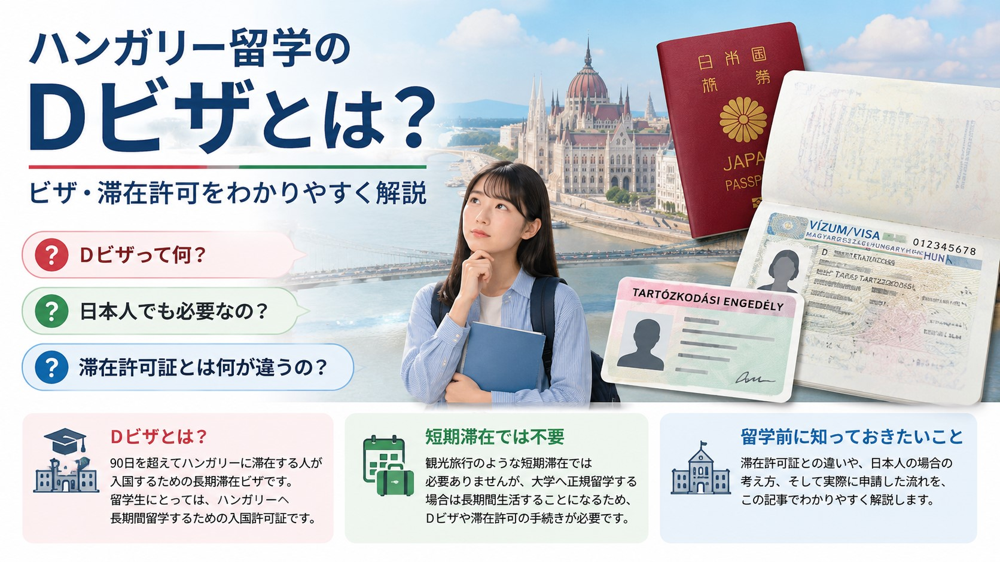
Dビザとは？ハンガリー留学前に知っておきたいビザ・滞在許可を解説
ハンガリー留学に必要なDビザとは何か、日本人は取得する必要があるのか、滞在許可証との違い、実際の申請体験をわかりやすく解説します。
記事を読む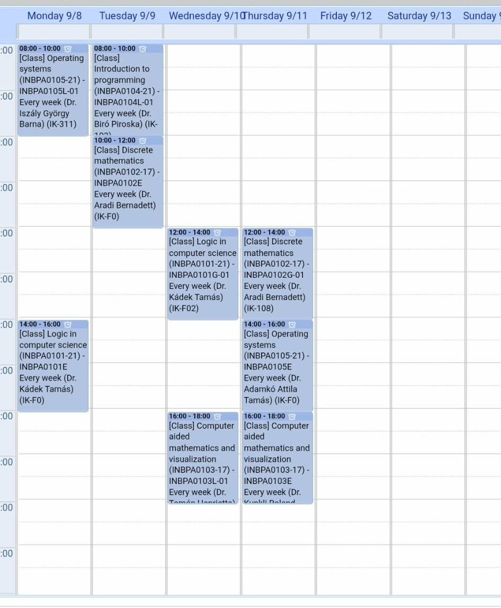
デブレツェン大学生の日常（1年前期編）
Computer Science1年前期の時間割や授業内容、図書館での勉強、三連休の過ごし方まで、デブレツェン大学でのリアルな1週間を紹介します。
記事を読む大学に寮がない！？ハンガリーで部屋探しに苦労した話
BUEB入学後、大学に寮がないことを知り、約1か月間ホステル生活を送りながら部屋探しをした実体験。FacebookやIngatlanでの探し方や、留学前に知っておきたい注意点を紹介します。
記事を読む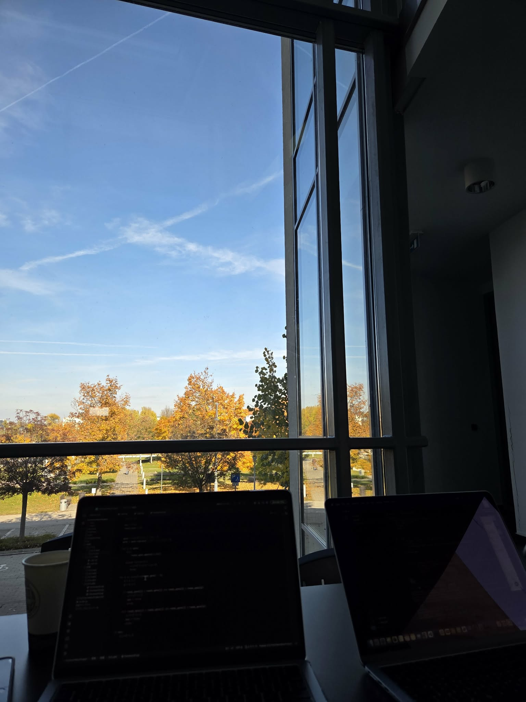
結構しんどい！ホームシックについて
ハンガリー留学中に感じたホームシックの実体験と、時間経過・日々の過ごし方・思い出の品などを通じた乗り越え方を紹介します。
記事を読む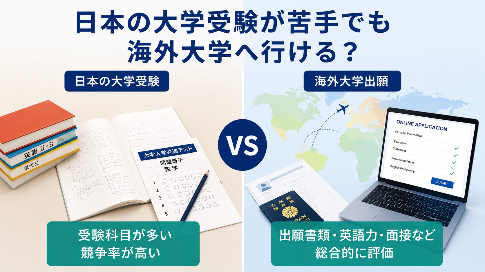
日本の大学受験が苦手でも海外大学という選択肢がある
日本とハンガリーの大学入試を比較。必要な試験科目や英語力、面接、モチベーションレター、返済不要の奨学金まで現役大学院生がわかりやすく解説します。
記事を読む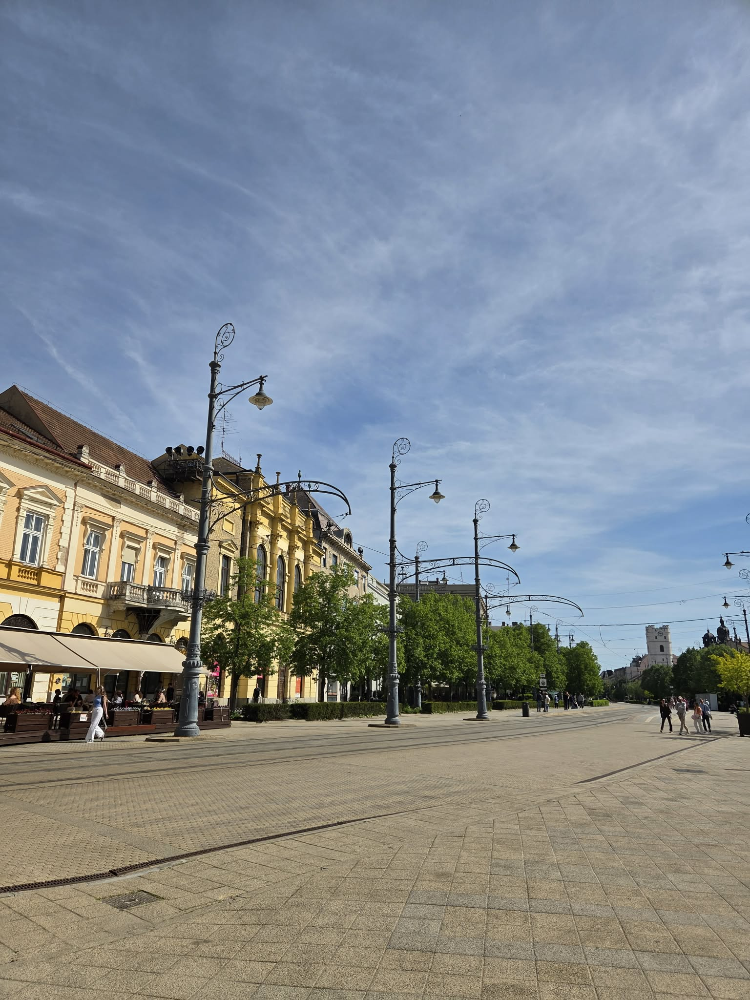
2学期やる気なくなる問題
留学生活2学期でモチベーションが下がってしまった実体験と、その乗り越え方について紹介します。
記事を読む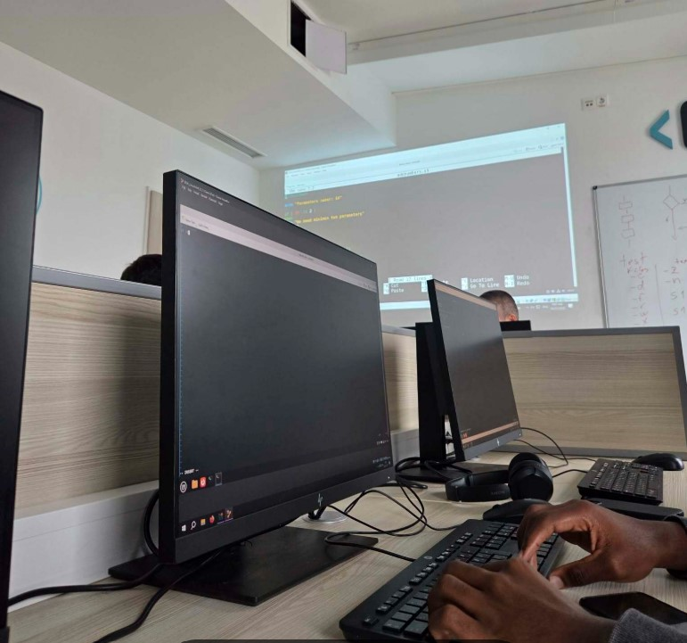
ハンガリーでの英語について
IELTS5.5でハンガリーへ進学したユウゴが、大学・友達・日常生活で実際にどれくらい英語を使うのかを体験ベースで紹介します。
記事を読む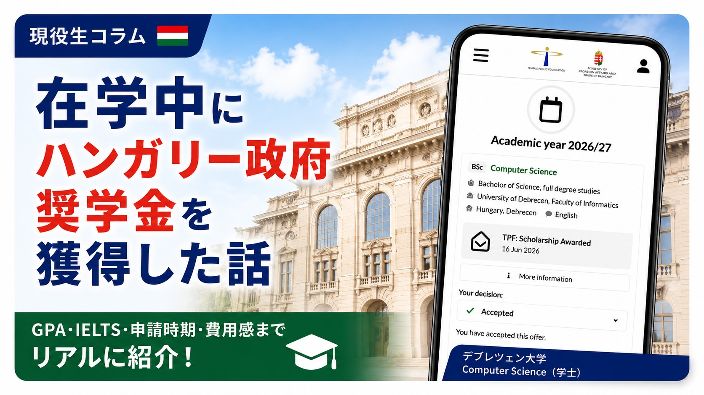
在学中にハンガリー政府奨学金を獲得した話
University of Debrecen在学中にスティペンディウム・ハンガリカムを獲得した体験談。
記事を読む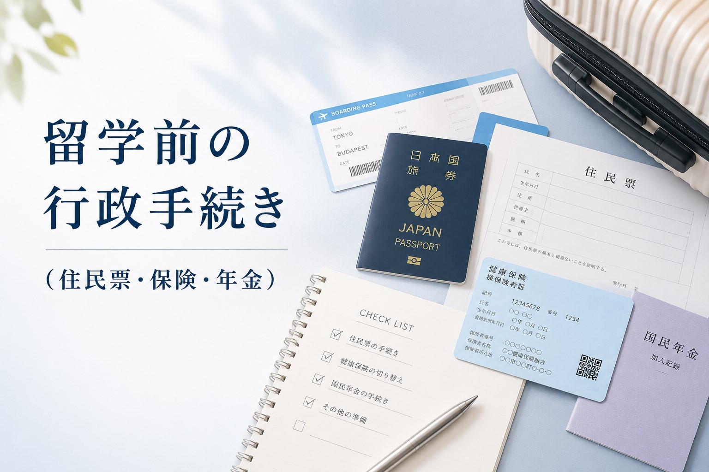
海外大学進学前に確認したい住民票・健康保険・国民年金の手続きまとめ
海外大学進学時の住民票、健康保険、国民健康保険、国民年金、マイナンバーカードの手続きを高校生や保護者向けにわかりやすく解説します。
記事を読むスティペンディウム・ハンガリカムは厳しい？継続条件と落ちる理由
ハンガリー奨学金の継続条件を高校生でもわかるように解説。必要な単位数や落ちる理由、実際の難易度まで整理します。
記事を読む
日本と比べてハンガリーは安全？治安をデータで比較
Global Peace IndexとNumbeoをもとに、日本とハンガリーの治安を比較し、留学前に知っておきたい安全性をわかりやすく整理します。
記事を読むハンガリー奨学金はどの大学に多い？
受け入れ大学ランキングから、奨学生がどこに集中しているのかを解説します。
記事を読む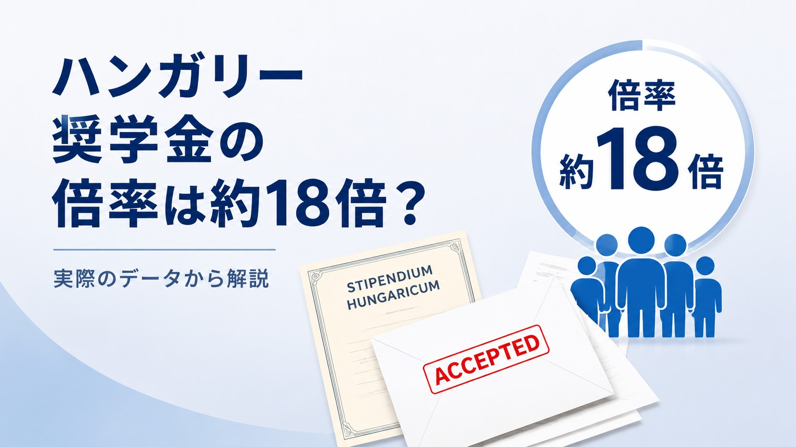
ハンガリー奨学金の倍率は約18倍？
倍率18倍と言われる理由と実際の難易度を解説します。
記事を読むハンガリー奨学金はどの国が多い？
国籍データから競争環境をわかりやすく解説。
記事を読む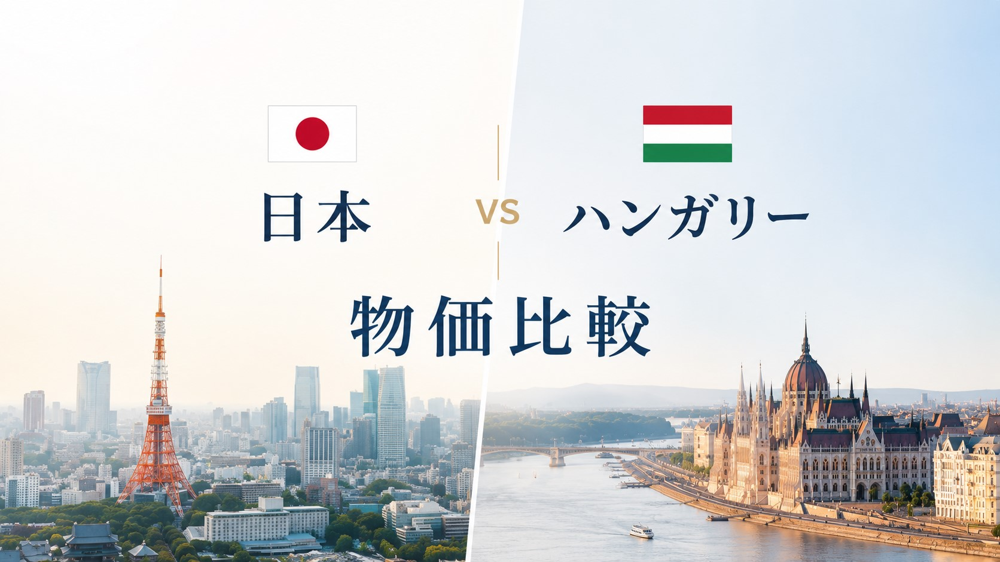
ハンガリー vs 日本｜主要都市の物価比較
ブダペスト・ペーチ・デブレツェン・セゲドと東京・大阪の生活費・家賃・外食の価格指数を比較。取得日と指数の読み方も確認できます。
記事を読む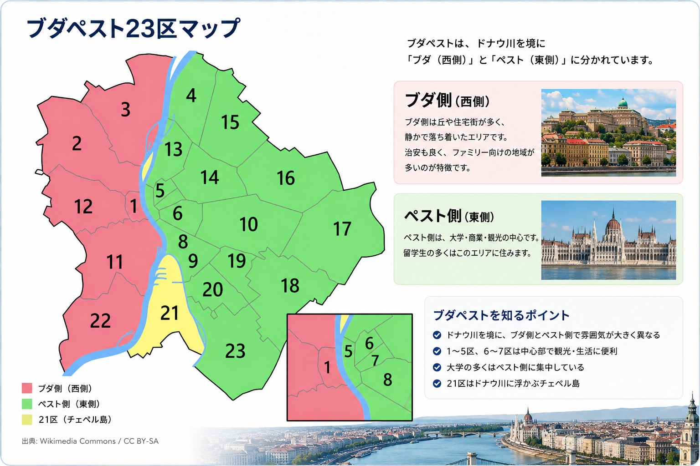
ブダペスト23区とは？留学生向けにエリア別でわかりやすく解説
ブダペストの23区を、ブダ側・ペスト側・観光エリア・留学生向けエリアに分けて整理。どこに住むべきか一発でわかるように解説します。
記事を読む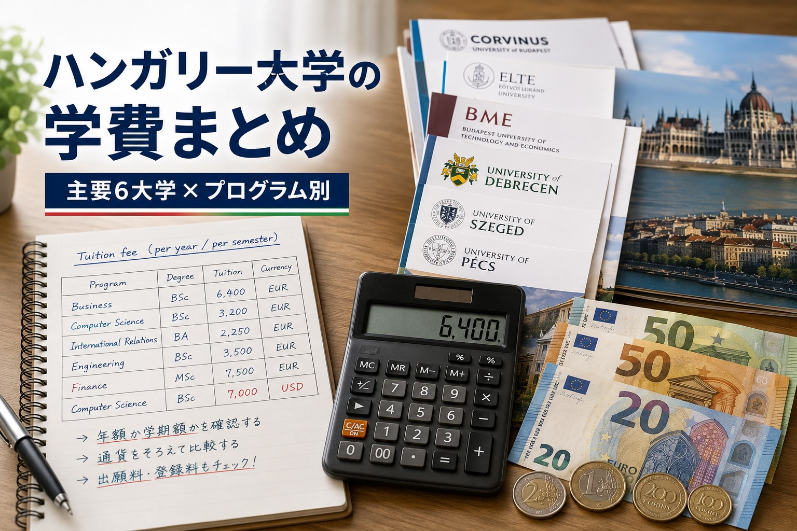
ハンガリー大学の学費まとめ｜主要6大学×プログラム別
Corvinus・ELTE・BME・Debrecen・Szeged・Pécsの学費をプログラム単位で整理。大学選びに必要な費用感を比較しやすくまとめました。
記事を読むハンガリー大学ランキング
大学を探すときの参考として、ランキングや大学比較の見方を整理します。
記事を読む日本人の海外留学はなぜ増えない？
日本人の海外留学の現状、費用の壁、政策、奨学金の全体像を整理し、ハンガリー留学という選択肢につなげて解説します。
記事を読む
ハンガリー留学の生活準備｜住居・交通・気候・持ち物
住まい・移動・持ち物。ハンガリーでの生活に向けた住居探し、公共交通、気候や電源などの基本情報を紹介します。
記事を読む